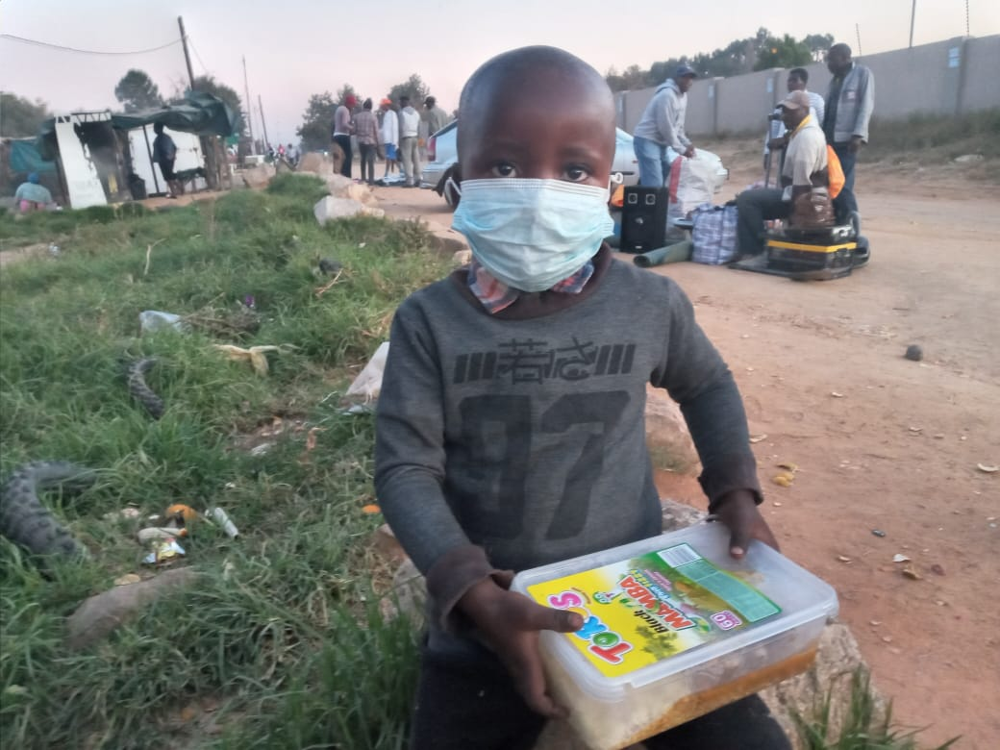

Caritas Angola
Apoio social e distribuição de alimentos e roupas.
Telefone: +244 949 212 624
Necessidades: Alimentos, roupas
Plataforma que conecta pessoas que querem doar a centros sociais em Luanda.
O Doa Perto foi criado para facilitar o acesso a centros sociais em Luanda, ajudando a ligar doadores a instituições que precisam de apoio, como roupas, alimento, dinheiro e muito mais.
O Doa Perto é um projeto social e transparente. Ele se mantém através de:
O objetivo nunca é lucro excessivo, mas sim sustentabilidade para manter o projeto ativo. Para mais informações contacte o whatssap de apoio: 950786774
Apoio social e distribuição de alimentos e roupas.
Telefone: +244 949 212 624
Necessidades: Alimentos, roupas
Projeto comunitário focado em educação e apoio social.
Telefone: +244 942 091 983
Necessidades: Material escolar
Apoio a crianças e programas de desenvolvimento infantil.
Telefone: +244 226 430 870
Necessidades: Educação, saúde
Centro de acolhimento de crianças vulneráveis.
Telefone: +244 997 176 872
Necessidades: Alimentos, roupas
Apoio a crianças em situação de vulnerabilidade.
Telefone: +244 927 648 969
Necessidades: Alimentação, educação
Instituição de caridade e apoio comunitário.
Telefone: +244 943 148 851
Necessidades: Alimentos
Projeto social focado na transformação de vidas.
Telefone: +244 939 094 337
Necessidades: Geral
Centro de apoio social e acolhimento.
Telefone: Disponível mediante contacto
Necessidades: Alimentos, roupas
Organização de apoio comunitário.
Telefone: Disponível mediante contacto
Necessidades: Geral
Centro de proteção e apoio infantil.
Telefone: +244 948 396 547
Necessidades: Alimentação, roupa

Pequenos gestos podem transformar vidas. O Doa Perto existe para facilitar a solidariedade em Angola.